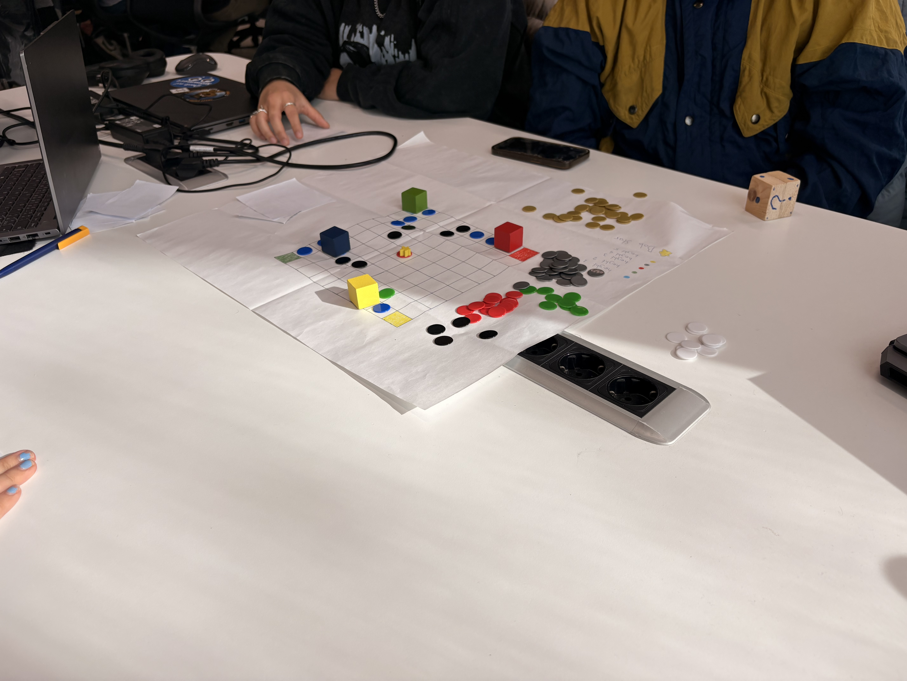
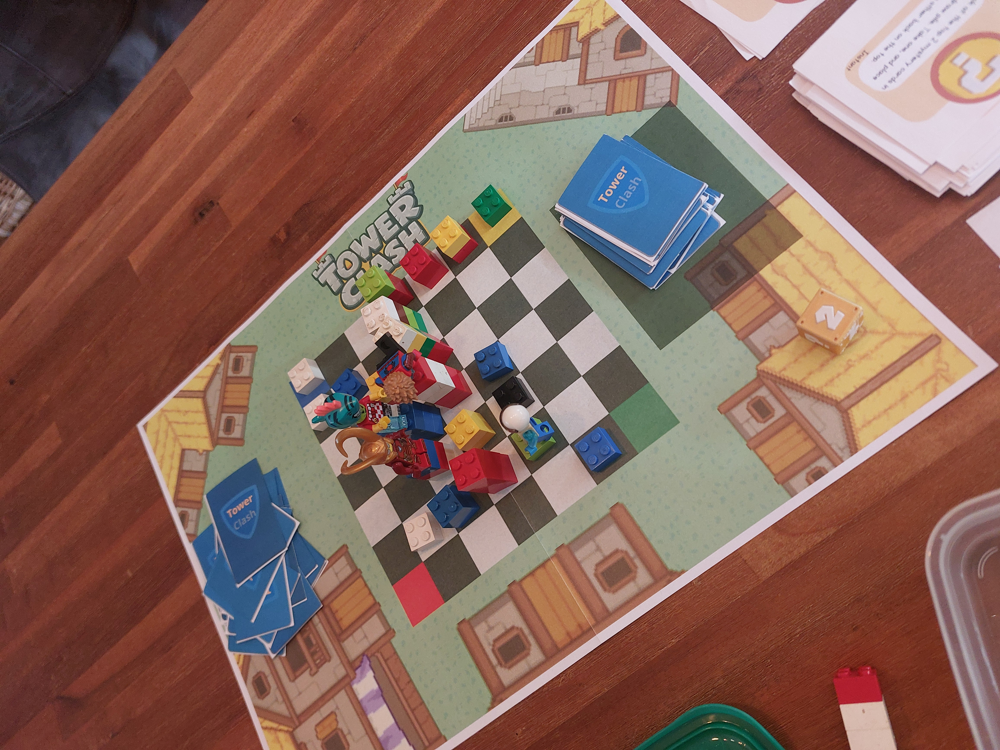
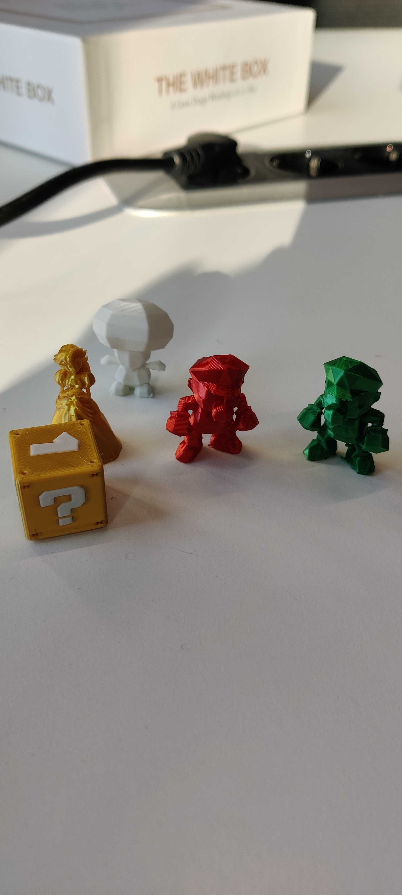
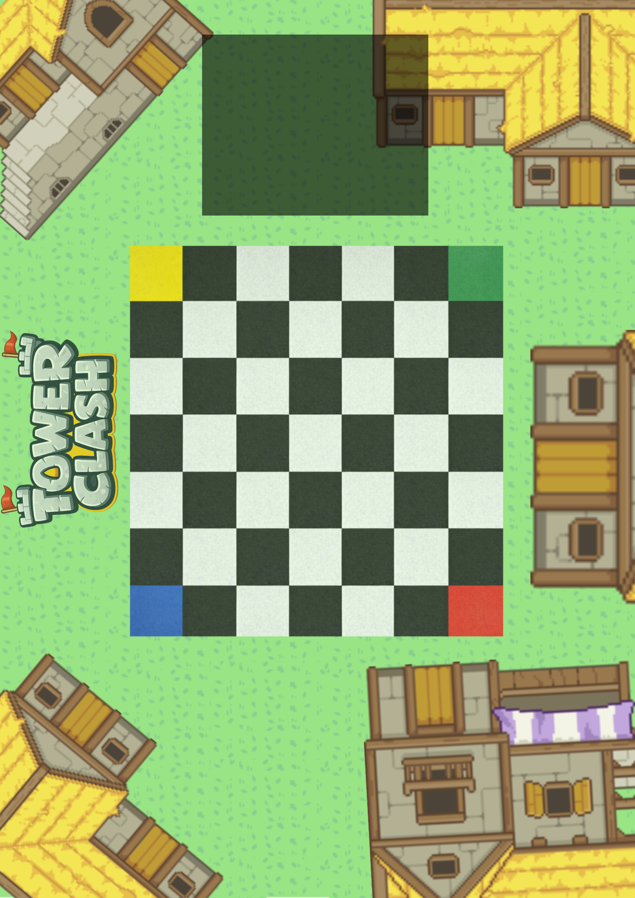
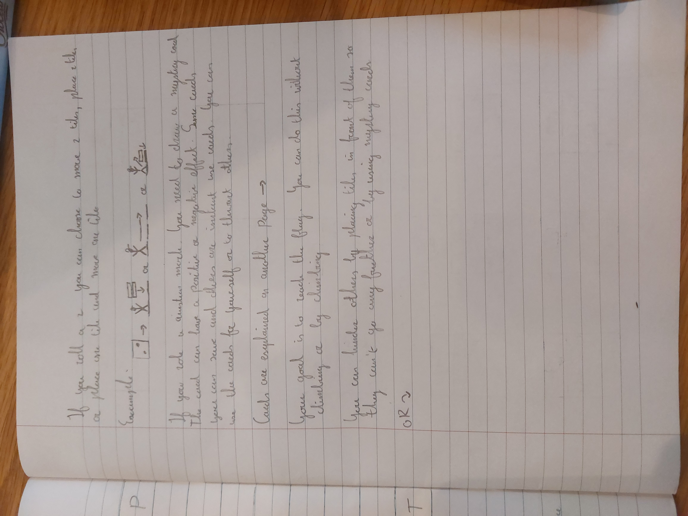
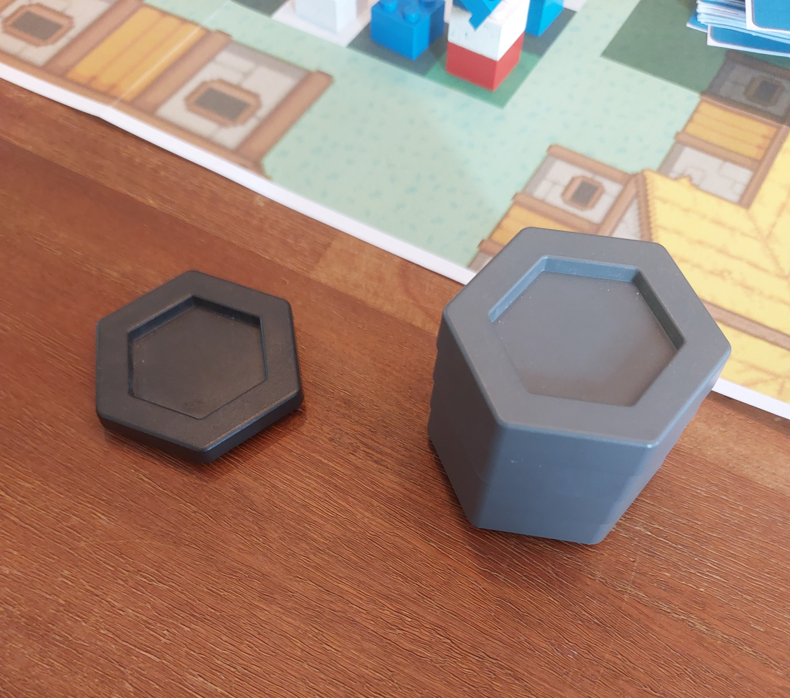
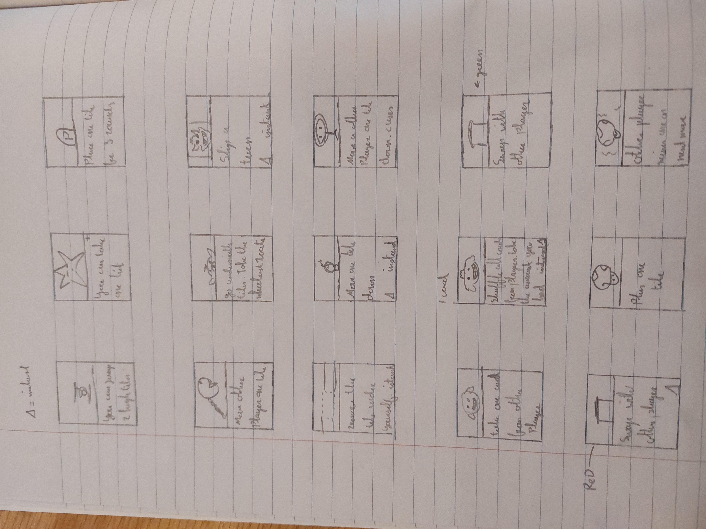
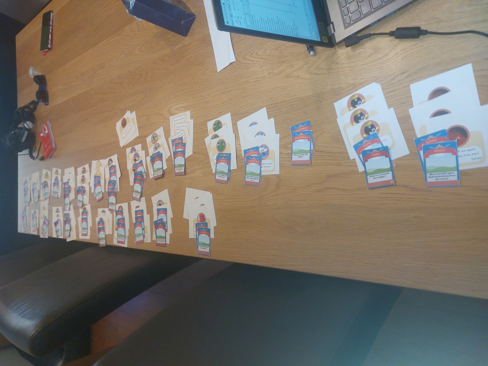
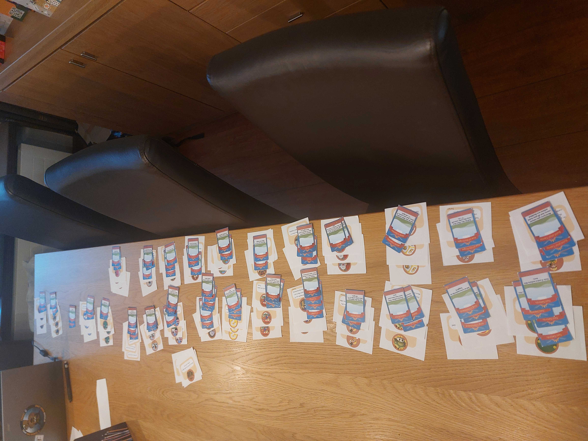
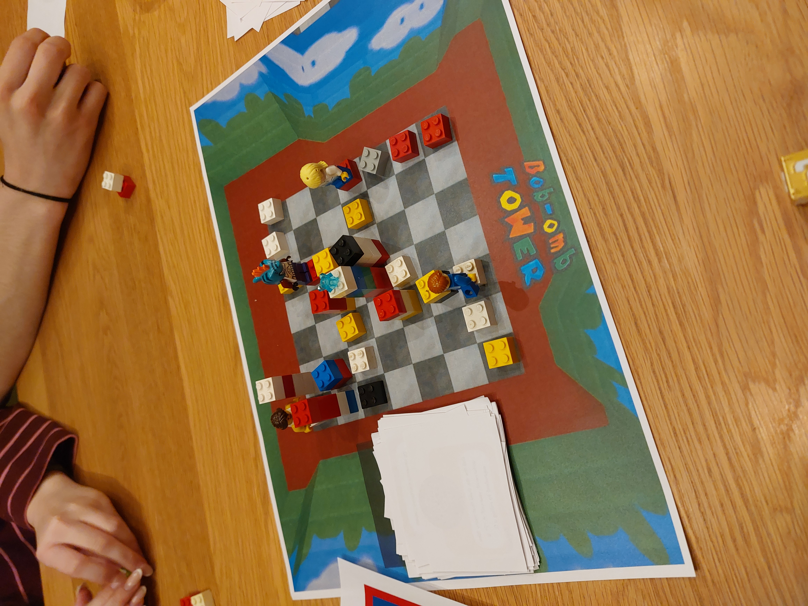

Starting with a playtest
The first playtest was part of a two-week group assignment. We used a simple board and pieces to try out the main idea: building a path upwards and moving across it.

A board game where the board keeps changing. Build your way up, block the others and try to reach the crown first.
Tower Clash started as a two-week group assignment called Bob-omb Tower. I continued working on it by myself and changed it into a medieval board game. Players build towers, move their characters across the board and try to reach the crown before anyone else. The height of the board matters, so every move can open a route or block one.
Tower Clash began as a Mario-inspired group project. These first tests helped me discover the board game I wanted to keep developing.

The first playtest was part of a two-week group assignment. We used a simple board and pieces to try out the main idea: building a path upwards and moving across it.

The first version used Mario-inspired characters and question blocks. I liked the idea of building a tower, so after the group project I continued developing the game and gave it its own medieval theme.

I changed the Mario-inspired concept into a medieval castle game with knights and a crown. I wanted the board and rules to support the same idea: players build a way up while making it harder for everyone else.
The board is not just where the game happens. Its height changes which moves are possible.

The game uses a 7 by 7 board, with a starting corner for each player. Players can climb one level at a time, and a stack can reach up to five tiles. The goal can also be raised, so the route to the crown can change while everyone is playing.
I had to think about how these rules work together. Building too high can help you get closer to the goal, but it can also give another player a new route across the board.
I used simple pieces first, so I could change the board quickly when a rule did not work.

I used LEGO bricks and a paper board to test the height of the tiles and how players could climb. This made it easy to move pieces around and try different situations without remaking the board every time.
It helped me see the rules on the table instead of only imagining them. I could check whether a move felt clear and whether the towers gave players interesting choices.
The cards add surprises, but they still need to fit the rules of the board.

I designed a deck of 78 cards split into seven groups: movement, defence, board control, action boosts, dice, risk and card draw. Each group gives players a different way to respond to what is happening on the board.
I also changed the names and visuals to match the medieval theme. The cards should be easy to understand, but still give players a reason to change their plan.


Different playtests helped me see which rules worked, what slowed the game down and what the theme needed.

Players usually understood the goal quickly and enjoyed blocking each other and using cards. I also saw that some games became slow when players did not build upwards often enough. That showed me I needed to keep adjusting the movement and building rules, and test how the cards affect the pace.
Tower Clash started as a short group project and became a game I wanted to continue on my own. The playtests showed me that the core idea works, but the pace and card balance can still improve. I want to test a version without dice and make a stronger physical prototype. There is still a lot I can try, and that is what makes me want to keep working on it.
This project taught me to: